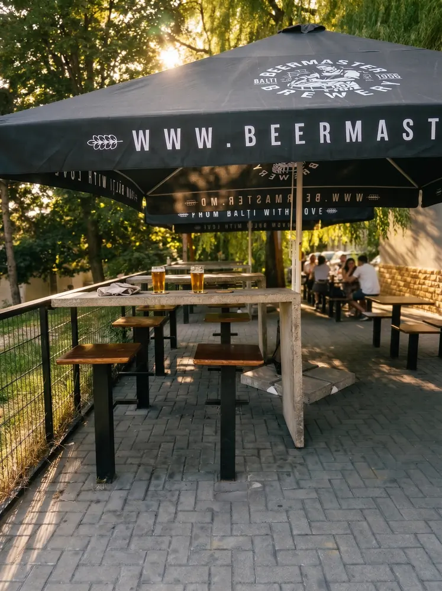

GYM BEER · BUIUCANI
Bere bună,
în Buiucani.
Bere craft, draft și gustări în Buiucani.
Chișinău, str. Alba Iulia 23
Programul se confirmă direct cu magazinul.

MAI SUNTEM ȘI ÎN BOTANICA

GYM BEER · BUIUCANI
Bere craft, draft și gustări în Buiucani.
Chișinău, str. Alba Iulia 23
Programul se confirmă direct cu magazinul.

MAI SUNTEM ȘI ÎN BOTANICA